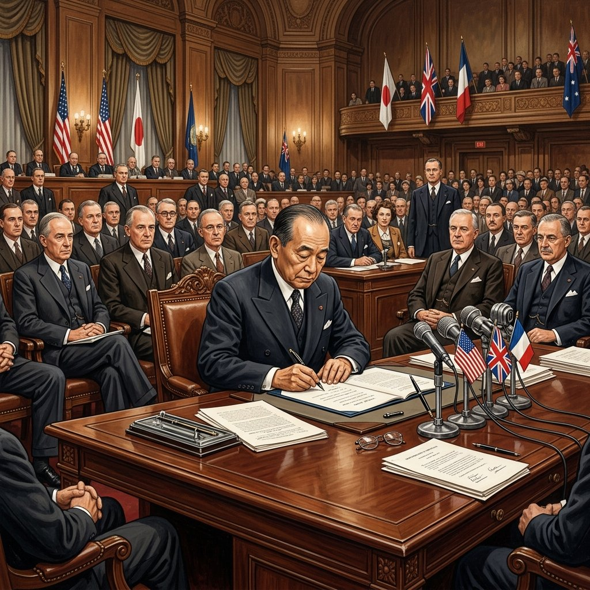
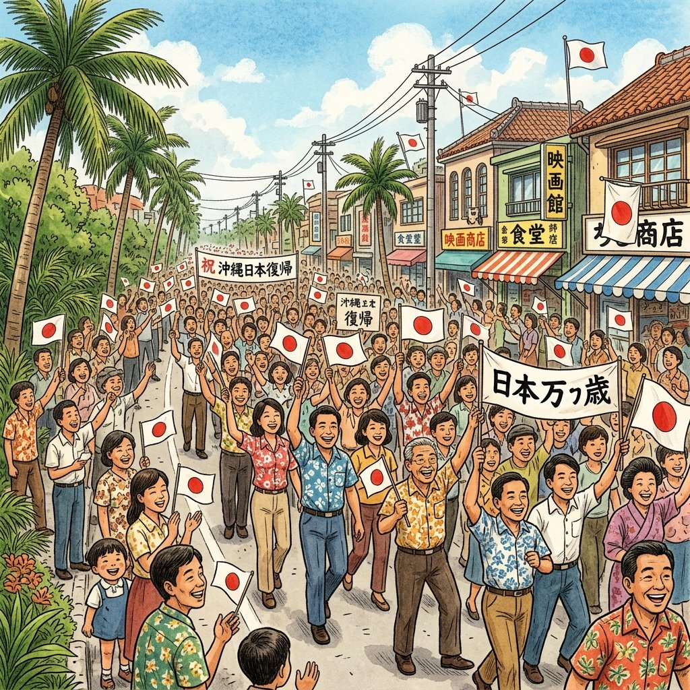

33. 主権回復と国際社会への復帰
敗戦から約6年、日本はGHQの占領下で民主化を進めながら、再び一つの独立国家として世界に戻る日を目指していました。今回は、日本が主権（独立）を取り戻したサンフランシスコ平和条約から、国際連合への加盟、そして沖縄の復帰や近隣諸国との国交回復まで、戦後日本の外交の歩みを一気に整理していきましょう！
1. 主権の回復と日米安全保障条約（1951年）
朝鮮戦争の勃発によって東西冷戦が激しくなる中、アメリカを中心とする西側陣営は、日本を自立させて味方に引き入れようと考えました。こうして1951年、アメリカのサンフランシスコで講和会議が開かれました。
① サンフランシスコ平和条約（1951年）
吉田茂（よしだしげる）首相のもと、日本は連合国のうち48カ国との間でサンフランシスコ平和条約を結びました。これにより、翌1952年に条約が発効し、GHQの占領が終わって日本は主権（独立）を回復しました。
※ただし、冷戦下であったため、ソ連などの東側陣営の国々はこの条約に署名しませんでした。また、中国は会議に招かれず、インドなどは不参加でした。このようにすべての対戦国と結んだ条約ではなかったため、これを単独講和（多数講和）と呼びます。
② 日米安全保障条約（1951年）
平和条約と同じ日に、日本とアメリカの間で日米安全保障条約（安保条約）が結ばれました。独立後も、日本にアメリカ軍（在日米軍）が駐留し続けることを認める条約です。これにより日本は、冷戦下においてアメリカを中心とする西側陣営（資本主義グループ）に深く組み込まれることになりました。
◆ 吉田茂（よしだしげる）首相
戦後の混乱期に長く首相を務め、サンフランシスコ平和条約に調印しました。ワンマン宰相とも呼ばれ、日本の戦後外交の基本路線（日米協調と経済重視）を決定づけました。

図1：1951年、サンフランシスコ平和条約に署名する吉田茂首相のイメージ
2. ソ連との国交回復と国際連合への加盟（1956年）
サンフランシスコ平和条約で署名しなかったソ連など、東側陣営との関係改善も大きな課題でした。
① 日ソ共同宣言（1956年）
鳩山一郎（はとやまいちろう）首相はソ連のモスクワへ渡り、日ソ共同宣言に調印しました。これにより、日本とソ連との戦争状態が正式に終了し、両国の国交が回復しました。しかし、北方領土（択捉島、国後島、色丹島、歯舞群島）の帰属問題は解決せず、現在にいたるまで平和条約は結ばれていません。
② 国際連合への加盟（1956年）
日ソ共同宣言によってソ連との国交が回復したことで、それまでソ連の拒否権によって阻まれていた日本の国際連合（国連）加盟が承認されました。日本は80番目の加盟国として正式に国際社会に復帰し、世界の一員としての地位を取り戻しました。
3. アジア諸国との関係正常化と沖縄の祖国復帰（1960〜1970年代）
高度経済成長期に入った日本は、アジア諸国との外交交渉をさらに進めました。
① 日韓基本条約（1965年）
佐藤栄作（さとうえいさく）首相のもと、大韓民国（韓国）との間で結ばれ、両国の国交が正常化しました。日本が経済協力を提供する代わりに、戦前の植民地支配に関する請求権の問題を「完全かつ最終的に解決された」と合意しましたが、歴史的な認識を巡る課題はその後も引き継がれることになります。
② 沖縄の祖国復帰（1972年）
敗戦後、沖縄は本土から切り離され、アメリカ軍の施政権下に置かれ、巨大な軍事基地が立ち並んでいました。沖縄県民の強い復帰運動と、佐藤栄作首相の交渉実務の末、1972年に沖縄の日本返還（祖国復帰）が実現し、沖縄県が再設置されました。
※このとき、佐藤首相は「核兵器を持たず、作らず、持ち込ませず」という非核三原則（ひかくさんげんそく）を掲げました（佐藤首相はのちにノーベル平和賞を受賞）。なお、小笠原諸島もこれに先立つ1968年にアメリカから返還されています。
③ 日中共同声明（1972年）
田中角栄（たなかかくえい）首相は北京を訪れ、中華人民共和国の周恩来首相と会談し、日中共同声明に署名して国交を正常化しました。これにより、日本は台湾（中華民国）との外交関係を終了させました。その後、1978年に日中平和友好条約が締結されました。

図2：1972年、本土復帰を喜び、日の丸の旗を掲げて祝う沖縄の人々のイメージ
🔥 この単元のテスト対策・暗記のコツ
-
★
首相名と外交イベントの組み合わせ（最重要！）：
・吉田茂 ＝ サンフランシスコ平和条約・日米安保条約（1951年）
・鳩山一郎 ＝ 日ソ共同宣言・国際連合加盟（1956年）
・佐藤栄作 ＝ 日韓基本条約（1965年）・沖縄返還（1972年）
・田中角栄 ＝ 日中共同声明（1972年）
※記述問題や並べ替え問題で非常に狙われやすいので、必ず名前と年と出来事をセットにしてください！ -
★
サンフランシスコ平和条約の年号語呂合わせ：
・「独立（1951）に向けてサンフランシスコ」と覚えます。 -
★
日ソ共同宣言＆国連加盟の年号語呂合わせ：
・「国連にいくころ（1956）に日ソ宣言」と覚えます。 -
★
沖縄返還＆日中共同声明（1972年）の年号語呂合わせ：
・「なんと見事（1972）な沖縄返還と日中声明」と覚えます。